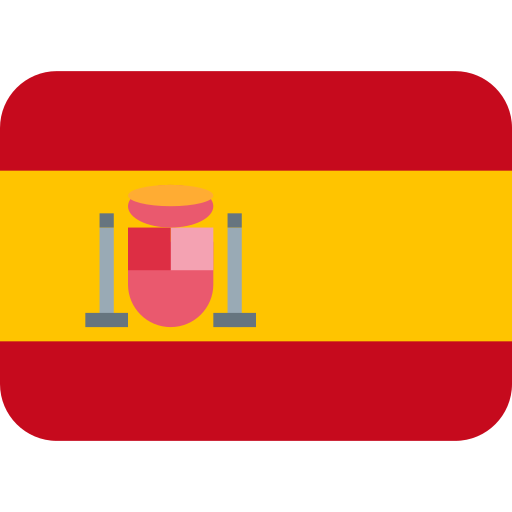
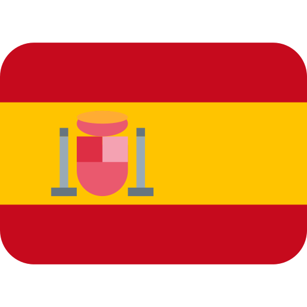

CREACIÓN DE IDEAS Y SOLUCIONES GRAFICAS
Soy licenciada en diseño gráfico con más de tres años de experiencia como directora creativa, diseñadora gráfica y redactora. He trabajado en la creación de identidades de marca, diseño web, diseño de redes sociales y contenido original Mi objetivo no es sólo mejorar tu imagen, sino cambiar completamente la forma en que tus clientes perciben tu trabajo y tu negocio.

.svg)
Estrategia creativa
Liderazgo del equipo de diseño
Conceptualización de campaña
Desarrollo de mensajes de marca
Gestión creativa de proyectos
Investigación de tendencias
.svg)
Diseño de identidad visual
Diseño de redes sociales
Diseño de materiales promocionales
Retoque y edición de imágenes
Creación de Infografías
Animación de vídeo
.svg)
Diseño web creativo y funcional
Desarrollo de la arquitectura de la información
Implementación de la interfaz de usuario (UI)
Desarrollo del backend y funcionalidades
Integración de sistemas y APIs
Optimización del rendimiento y velocidad del sitio
Mantenimiento y actualización continua del sitio web
.png)
.png)
.png) 

.png)
.png)
.png)